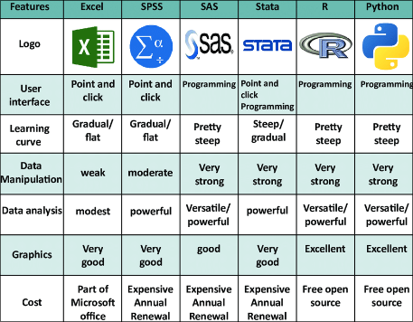
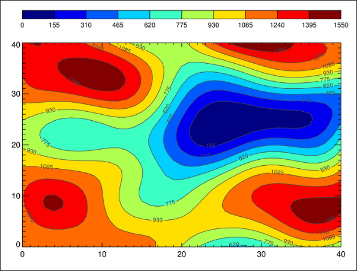

Data Analysis Tools#
Author: John Kessler and Ankit Biswas
Data Analysis & Scientific Programming Tools#
Statistical analysis tools are software applications that enable researchers to perform various statistical tests and calculations on their data. These tools are essential in research fields that involve quantitative and computationally-intensive data analysis techniques, such as economics, biology, and physics. With these applications, you can analyze large pieces of data or compute complicated operations with ease. Below, we discuss some commonly used tools, along with their pros and cons.
Python (Recommended)#
Created in the late 1980s, Python is a high-level beginner-friendly programming language with a rich ecosystem of scientific and data-centered packages that have made it a paradigm in the world of research. According to a 2019 survey by Kaggle, one of the world’s leading companies in data science and machine learning, Python is the preferred language of choice by about 90% of data scientists. Due to its beginner-friendly and readable nature, you can start making your first Python within a matter of minutes! To download Python, visit: https://www.python.org/downloads/.
Pros:
Large open source community
Extensive package ecosystem
Gradual learning curve
Readability and ease of deployment
Support for advanced machine learning packages
Cons:
Notoriously slower than low-level languages like C and C++
High memory consumption
Package maintainers may not have the expertise when compared to other languages (See this Reddit thread: https://www.reddit.com/r/statistics/comments/8de54s/comment/dxmnaef/)
One of the most important features of Python is its mainstay of libraries that are used to produce the science you see in the world’s top journals. Some of the most prominent include:
NumPy: A library for numerical computing, providing support for large multi-dimensional arrays and matrices.
Pandas: A library for data manipulation and analysis, offering powerful data structures that can be used to store and compute billions of values (think Excel or Google Sheets but even more versatile)
SciPy: A library for scientific and technical computing, providing many user-friendly and efficient numerical routines.
Scikit-Learn: A large machine learning library that provides an extensive array of various algorithms and complementary validation techniques. With a few lines of code, you can create your own AI!
PyTorch/Tensorflow: Two large deep learning libraries primarily used for the creation of deep learning networks. Developed by Meta and Google respectively, these libraries have been used to create some of the world’s most famous AIs, including ChatGPT and StockFish (the world’s best chess bot)
Matplotlib: A plotting library for creating static, animated, and interactive visualizations in Python. This library is responsible for most plots and graphs seen in scientific literature
{kind=link}
R#
R is a popular programming language and software environment for statistical computing and graphics. It is widely used in academia and research for data analysis, visualization, and modeling.
Compared to Python’s host of various libraries from various distributors that have to be combined together in a “library stack,” R’s out-of-the-box statistical features allow for ease of implementation and computing. To download R, visit: https://cran.r-project.org/mirrors.html.
Pros:
Open source
Platform-independent
Versatile
Support for machine-learning primitives
Specialized for data handling and statistics
Cons:
Steep learning curve
Speed slower than or similar to Python
Memory intensive
Here are some of the most widely used R packages:
Tidyverse: A collection of versatile and powerful data analysis packages (a metapackage) that cover everything from data importing and cleaning to in-depth analysis of large dataframes.
ggplot2: A powerful data visualization package for creating complex and publication-quality plots. Along with Matplotlib, this package is used to produce a large fraction of the plots seen commonly in scientific literature.
caret: A package for building predictive models using various modeling techniques.
{kind=link}
MATLAB#
MATLAB is a widely-used proprietary programming language and software environment for numeric computing and scientific simulations. While it has a wide array of uses beyond it, in the context of data science alone, it can be used for a variety of tasks such as data organizing and data cleaning. Get MATLAB here: https://www.mathworks.com/products/matlab.html.
Pros:
Excellent, detailed documentation
Backing of a company
Matrix/vector computing
Cons:
Proprietary, closed source
Expensive
Limited flexibility, not great with AI/ML
Unlike similar languages like R and Python, MATLAB packages are all proprietary and provided through their parent company MathWorks.
Other Non-Programming Analysis Tools#
Excel: A widely-used proprietary spreadsheet management tool created by Microsoft. Used commonly in behavioral science or business analysis when analyzing small to moderately–sized datasets.
SPSS (Statistical Package for the Social Sciences): A comprehensive statistical software widely used in social sciences, education, and market research. It offers a user-friendly interface and a wide range of statistical procedures.
SAS (Statistical Analysis System): A powerful statistical software suite used extensively in various research areas, including healthcare, finance, and government. It is known for its advanced analytical capabilities and data management tools.
Minitab: A statistical software package designed for quality improvement and data analysis in industries and research. It provides a range of statistical tools, including control charts, regression analysis, and experimental design.
{kind=link}
Data Visualization Tools#
Data visualization tools transform complex data into visually appealing and understandable formats, such as charts, graphs, maps, and infographics. These tools help researchers communicate their findings effectively and enable stakeholders to grasp complex concepts more easily. Visualizations can reveal patterns, trends, and outliers that may not be immediately apparent in raw data. Beyond what we’ve mentioned above, here are some other useful libraries and packages for data visualization:
Tableau: A powerful data visualization and business intelligence tool that allows researchers to create interactive dashboards, charts, and reports. It supports a wide range of data sources and offers advanced analytics capabilities.
Microsoft Power BI: A business analytics service that provides data visualization and reporting capabilities. It allows researchers to connect to various data sources, create interactive reports and dashboards, and share insights with colleagues.
Plotly: A high-level, declarative charting library that can be used in Python, R, and other programming languages. It offers a wide range of chart types and supports interactive visualizations.
Bokeh: A Python library for creating interactive, web-based visualizations. It provides high-performance visualizations for large or streaming datasets and supports a range of chart types and customizations.
{kind=link}
Choosing the Right Tool(s)#
When selecting the appropriate data analysis tool(s) for your research, it is crucial to consider factors such as the nature of your data, the complexity of your analysis requirements, the size of your dataset, and your familiarity with different tools. For statistical analysis, tools like SPSS, SAS, Minitab, and R are popular choices, offering a wide range of statistical techniques. If you require advanced customization and the ability to develop complex algorithms, programming languages like Python, along with their rich ecosystem of data analysis libraries, may be more suitable.
For data visualization, tools like Tableau, Microsoft Power BI, Plotly, and Bokeh provide powerful capabilities for creating interactive and visually appealing representations of your data. In some cases, a combination of tools may be necessary to address all aspects of your research, such as using a programming language like Python or R for data manipulation and analysis, and then leveraging a visualization tool like Tableau or Plotly for presenting the results.